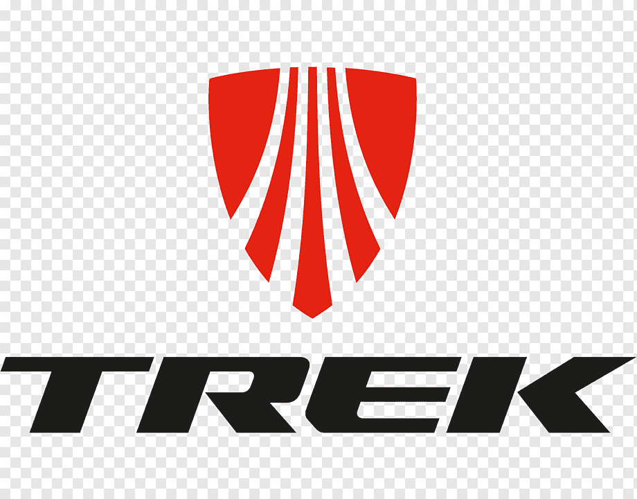

Trek Bicycle Corporation is a bicycle and cycling product manufacturer and distributor under brand names Trek, Electra Bicycle Company, Bontrager, and Diamant Bikes. The company has previously manufactured bikes under the Gary Fisher, LeMond Racing Cycles, Klein, and Villiger Bikes brand names. With its headquarters in Waterloo, Wisconsin, Trek bicycles are marketed[when?] through 1,700 independently owned bicycle shops across North America, subsidiaries in Europe, Asia, South Africa, as well as distributors in 90 countries worldwide. Most Trek bicycles are manufactured outside the United States, in countries including the Netherlands, Germany, Taiwan, and China.